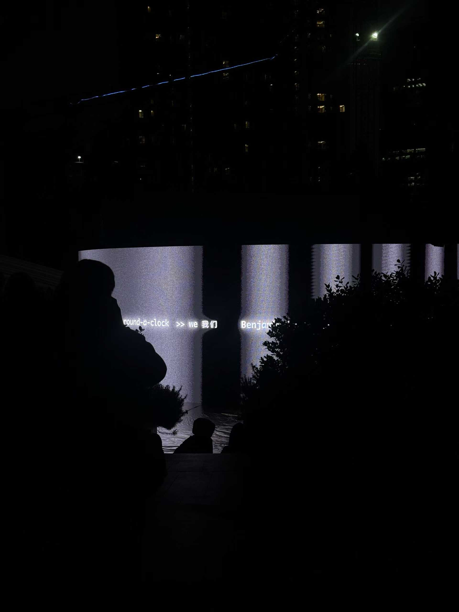
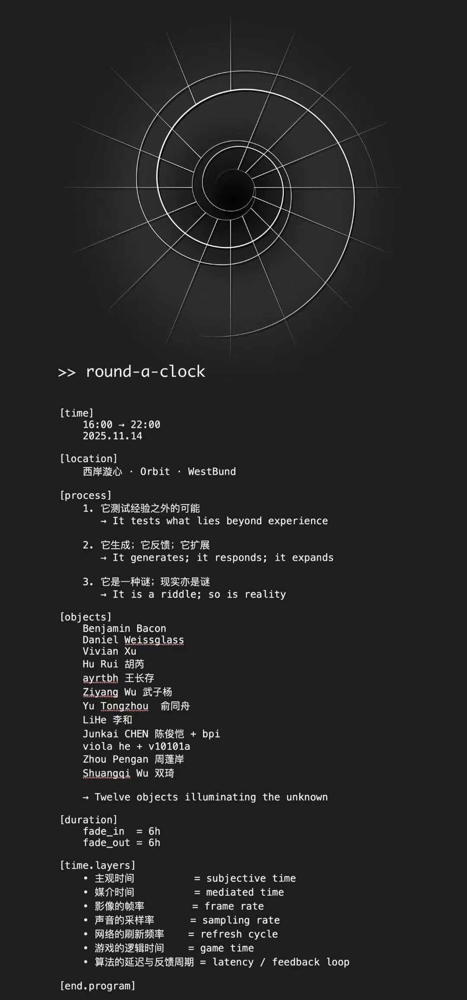
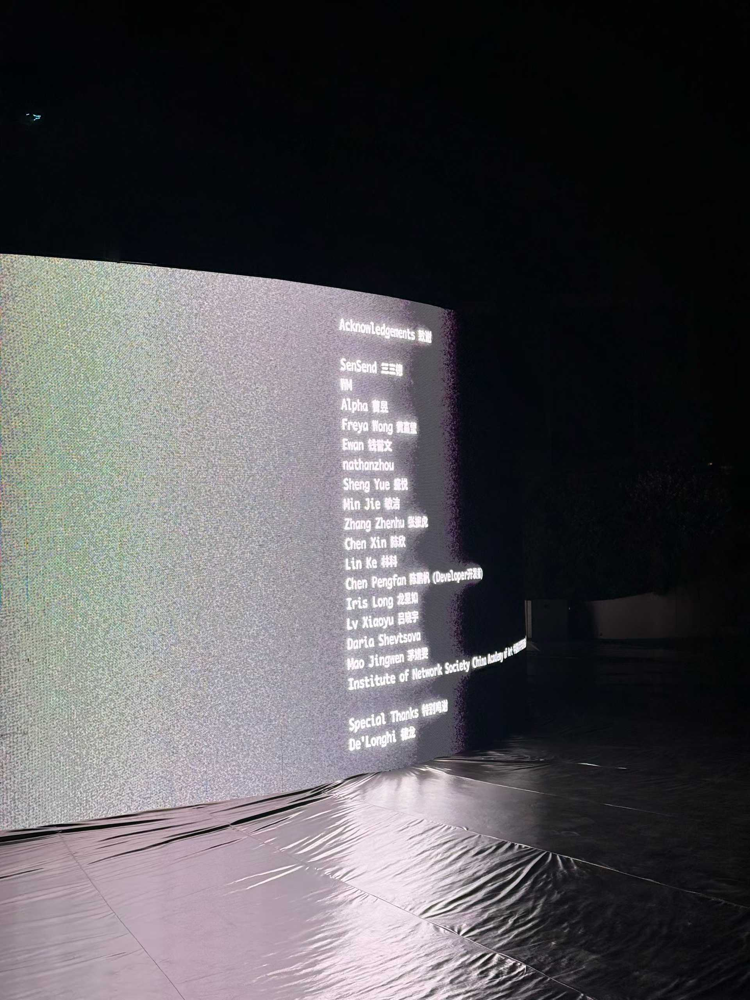
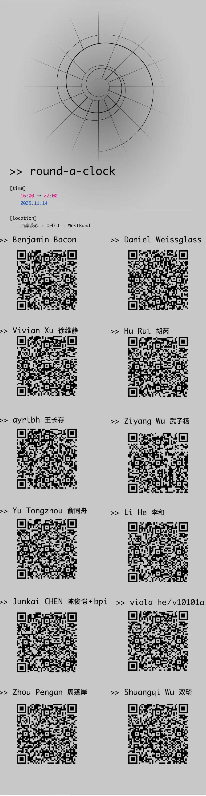

Overview / 项目简介
在 Orbit · 西岸旋心的公共屏幕活动中，VIRTURA 承担部分媒体视觉内容的排版与图像制作，为环形 LED 画布提供活动视觉制作支持。
Format
公共空间活动与环形 LED 媒体装置
VIRTURA Role
媒体视觉排版、图像制作、活动视觉支持
Context
十二件作品与六小时渐入、六小时渐出的时间结构
Selected Media / 现场与物料
封面使用环形屏幕现场正面图；视频与现场照片说明内容在空间和 LED 画布中的实际呈现。




Content / 内容组织
Media for a public screen.
视觉工作围绕活动信息、作品顺序、艺术家名单与环形屏幕比例展开。VIRTURA 参与的是媒体视觉内容和活动视觉制作，不将整个活动表述为独立策划。
Credits / 项目署名
- Event
- round-a-clock
- Location
- Orbit · 西岸旋心 · West Bund
- Date
- 2025.11.14 · 16:00-22:00
- VIRTURA Role
- 媒体视觉内容排版及图像制作 / 活动视觉制作支持
- Artists
- Benjamin Bacon, Daniel Weissglass, Vivian Xu, Hu Rui, ayrtbh, Ziyang Wu, Yu Tongzhou, Li He, Junkai CHEN + bpi, viola he + v10101a, Zhou Pengan, Shuangqi Wu
- Full Credits
- 以现场节目单与致谢画面为准